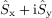
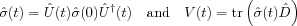
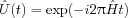

- EasySpin
- Documentation
- Publications
- Website
- Academy
- Forum
Calculates time traces for 1D and 2D ESEEM experiments.
td = evolve(Sig,Det,Ham,n,dt) td = evolve(Sig,Det,Ham,n,dt,IncScheme) td = evolve(Sig,Det,Ham,n,dt,IncScheme,Mix)
This function calculates time traces for 1D or 2D ESEEM experiments with up to four swept invervals/lengths.
The row vector IncScheme specifies the incrementation scheme of the
ESEEM experiment to simulate. It can contain
only 1, -1, 2 and -2. 1
symbolises the t1 dimension (along columns in the output), 2 is the t2 dimension
(along rows). The sign determines whether the evolution period is incremented or decremented
along the given dimension. IncScheme = [1 2 -2 1] means that the first and
fourth evolution period are incremented together yielding the t1
dimension, whereas the second and third period give the t2 dimension with the
third being decremented.
There is only a limited set of incrementation schemes supported by evolve. The following
table lists all possible values for IncScheme with some corresponding
experiments.
| IncScheme | experiments |
[1] | simple FID, 3-pulse ESEEM, DEFENCE |
[1 1] | 2-pulse ESEEM, CP |
[1 -1] | PEANUT |
[1 2] | HYSCORE, DONUT-HYSCORE |
[1 1 2] | |
[1 2 1] | 2D-3-pulse ESEEM |
[1 2 2 1] | 2D-CP |
[1 2 -2 1] | 2D-PEANUT |
[1 -1 1 -1] |
Sig is the density matrix at the start of the first evolution
period and doesn't have to be a thermal equilibrium density. It can be
a density prepared to a non-equilibrium state by a preparation
sequence.
Det is the detection operator used in calculating the actual
signal. It, too, can be a matrix describing a complete detection
sequence. It can be non-Hermitian like
, so that a complex
time-domain signal is returned in td.
Ham is the Hamilton operator which governs the evolutions. For a
2D experiment, Ham can be a cell array, in which case
Ham{1} will be used for the first dimension and
Ham{2} for the second. Otherwise the same Hamiltonian is used
for both dimensions.
If Mix is given, it is assumed to be a cell array containing all
unitary matrices representing the mixing sequences sandwiched between
the swept periods. Mix{k} is the mixer after the kth
evolution period. Mix has to be specified for experiments with more
than one sweep period.
dt gives the time increment for the evolution period. For a 2D
experiment, it can be a 2-vector containing the increments for the
different axes. If only a scalar is given, it is used for all
dimensions. The same applies to n, which gives the number of
points in each dimension.
All matrices have to be in the same basis. Units are Megahertz for
Ham and Det, and microseconds for dt. In each dimension
the first point in td contains the signal arising from the
initial density matrix.
The line
td = evolve(Sig,Det,Ham,128,0.01,[1 2],Mix);
simulates a HYSCORE or a DONUT-HYSCORE spectrum with 128x128 points and a step time of 10 ns in both dimensions.
The function uses the standard equations  and evaluates them in the eigenbasis of the propagator  after transformation to Liouville space. The propagation superoperator is then diagonal as well, and the density can be evolved by simply multiplying it with the diagonal of the superpropagator element-by-element. The state space trace is evaluated in a similar way.